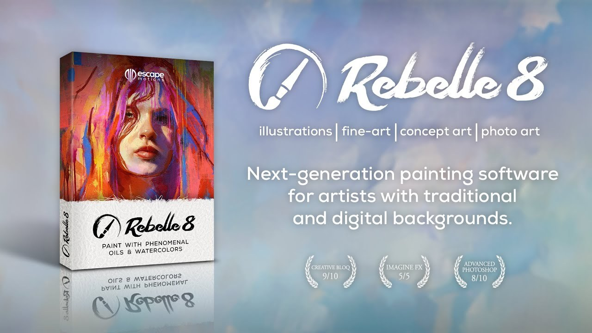

01
Rebelle 8.4 更新筆刷角度控制與 WebSocket 存取事件
CG Channel 於 2026 年 11 月 23 日更新 Rebelle 8 系列報導，8.4 新增筆刷 Rotation、初始角度鎖定及結構不透明度設定，WebSocket 也支援 Save、Load。文章前段的 8.1 至 8.3 功能屬歷次更新，不能全部算作 8.4 新增。

製作流程 ★★★★★
完整分析
8.4 的筆刷控制變更
此次更新新增控制筆刷角度的 Rotation，Texture 與 Bristle 筆刷可用 Lock Initial Angle，並加入 structures 的 Opacity 設定。原文把 8.4 定位為效能及工作流程更新，沒有將先前的粒子筆刷引擎重新列為這次首發。
遠端控制擴及儲存與載入
8.4 的 WebSocket 連線新增 Save 與 Load 事件，並改善介面、啟動及選取筆刷預設的操作效能。系列文章說明 WebSocket 可供遠端控制；可推論新增事件擴充這類整合能操作的範圍，但並無實際演出部署成果。
系列文章須分辨版本歸屬
高度圖輸出 16 位元 EXR 是文章 2026 年 8 月的 8.3 更新，RealShader 與油彩柔和陰影則在更早的 Pro 介紹。閱讀這篇持續更新報導時，應以 11 月 23 日的 8.4 段落判斷本次變更，避免把舊功能當成新發布。
BRIEF｜來源已驗證；證據深度較有限，完整分析會明確區分已知資訊與待驗證事項。